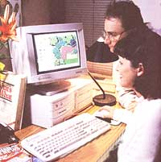
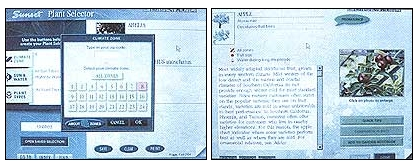
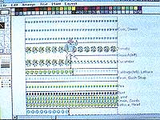
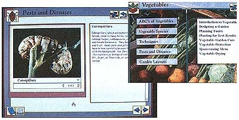
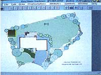
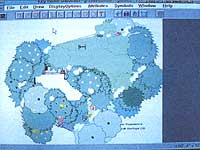
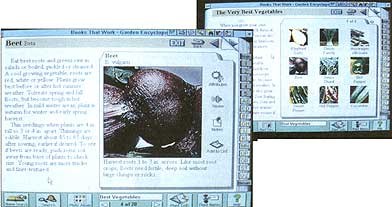
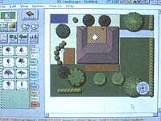
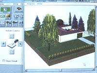

As I see it, the only thing wrong with gardens is ,the dirt. Ick. You know how it feels when your hands are all coated with dry gritty earth, and when you rub them together it feels like you're wearing gloves? And then you've got black hemispheres under your fingernails. Fortunately, we live in an age when you can have a beautiful garden growing on your computer screen, tending immaculate pixels made of light. A virtual garden.
Back in the old days of last year, Joy took a pencil in her hand and made a diagram of our garden-to-be: potatoes here, rutabagas there, marigolds and turnips hither, and onions yon. She frequently consulted her vast library of books on plants, manually copying notes into her own garden notebook. Much scribbling and mumbling ensued. Then she tried to explain the master plan to me, so I'd know where and how to dig. Frankly; the explanation made me drowsier than five minutes in a wallpaper store. Garden planning is the most critical aspect of planning a garden, I gathered, but I didn't really see what is was about. Why plan, I thought, when you can just dig dirt and plant seeds? But it made sense to her, so Joy was definitely the sheriff of that territory.
Given my fast draw on the computer, I'm sheriff of this one. Here we have eight versions of garden and landscape planning software and plant encyclopedias, in cute CD-ROM or cuddly disk format, with plenty of rich, loamy documentation: the stuff of a gardener's dreams, the delight of garden planners who might wish to impose some order on Nature's bounty in a holistic and earth-friendly manner with a computer simulation. It's called a PC for good reason.
At first, Joy was not eager to use this keen software. Maybe she's a Luddite.
"I am not," Joy says, reading this over my shoulder. "I have my own computer, don't I? I'm helping you review these programs, aren't I? So be nice. I don't call you a computer nerd because you've got Windows and I use DOS."
There it is. Technology is all right, but no substitute for reality. Joy actually likes DOS, probably for the same reason she's proud of blisters from working in the garden. There are two kinds of relationships with the soil: those who like to get dirty and those who don't. Joy revels in the physical contact, whereas Hell for me would be working barefoot in a garden.
"What do you mean? I wear Birkies," my co-gardener says.
Same thing. I wear boots, socks, gloves, and a hat, and try to garden from a safe distance, often with motorized tools. The whole thing is a chore, and I treasure my ignorance. And answer me this: What's the real point to planning a garden, complete with charts and a garden notebook?
Joy just laughs. "Oh, a million reasons: for companion planting, for disease and pest control, for comparing results from year to year, to make sure the tall stuff like corn is at the north end so it won't shade the sun lovers, and so we can calculate our primary and secondary harvest schedules. Planning is Step One-obviously. It's all a function of the rational mind. Besides, planning a garden is half the fun."
Right. Exactly. With garden planning software, it can be all fun (and no work). In addition, the software encyclopedias make it easy to learn all about vegetables, flowers, shrubs, trees, and vines, without ever seeing any in real life. ("Spoken like a true non-gardener," Joy intones.)
My machine is an IBM clone, 486-33 with a dual-speed CD, 8MB RAM, and no math coprocessor. Most of the software reviewed here requires a 386 or better, and much of it runs best on 4MB RAM. Sunset Western Garden recommends 8MB, as does BTW's Garden Encyclopedia, but Mindsun's Gardenview can use as little as 640Kb RAM (although 2MB gives you more flexibility.) It is my understanding that CD-ROMs will work on both PCs and Macintoshes, through some incomprehensible magic.
Bear in mind, there's a lot of variety in garden software. Comparing any two of these programs would be like comparing a Volkswagen to an ice-cream maker; in perspective, both are machines, both use motive power to achieve a desired end, and both need a lot of cranking, but they have dissimilar purposes.
Therefore, this review is not a comparison, because each of these programs takes a different approach, just as real-dirt gardeners do. Gardeners are an idiosyncratic lot, with personal preferences as varied as humanity itself the double-diggers versus no-tillers, the mulchers versus the bare-dirters, informal versus formal gardeners. But anyone who works from inspiration and love seems to raise a good garden no matter what they do. This software was designed to help you do it.
SUNSET WESTERN GARDEN (CD-ROM)
I could rave about this one, and not just because it's based on Sunset's time-honored -Western Garden Book (We have a copy of the first edition, 1954). It has everything needed to compile a garden notebook-in fact, as many separate notebooks as you'd like-a 6,000 plant encyclopedia that's as comprehensive as any ever compiled, and a plant selector to help you choose every flower, vegetable, shrub, cactus, and tree for your particular climate zone. You don't know your zone? Click on Climate Zones and type in your zip code. But wait a minute. "Punch in a Vermont zip code," Joy says. Uh-oh. This is a garden guide for the Western states only. But it covers all 24 climate zones, and their zones are more definitive than the USDAs.
There's also a Companion Plants button in each plant's entry, grayed out (turned off) unless applicable. It lists all the vegetation your selected plants like to hang out with. Under Quick Tips, you'll find either diagrams and text or explanatory videos-minimovies showing you how to double-dig (under the plant type Kale), or nontoxic pest control methods (under Blackberries). The installation even provides a video driver, version 1.1d, to upgrade my old VD. (Come on, it's a perfectly good computer acronym.)
The only glitch I encountered was between my headphones. At one point, I thought the system had locked up, because the last "Done" button was a light pastel green, very hard to see in the cascade of subwindows. I clicked like crazy until I found it. In the Encyclopedia and Plant Selector, the page-turning icon was easy to identify and use: dog-ear flaps in the lower right-hand corner, with arrows to turn pages, forward or back).
This CD-ROM comes with a book:
The Illustrated Guide to Attracting Birds. I wondered why they bothered, but Joy saw it and glommed onto it as the bird book she'd been needing all her life. (Did you know ruby-throated hummingbirds eat insects and spiders? I didn't.) Joy liked the software, but she loved the book. It's on her favorite shelf. That's why they bothered.
BEL TERRE PRO BY TERRACE SOFTWARE (Diskette)
Through some mix-up I was sent this software, which runs only on a Macintosh. So I decided right away not to review this software. Too dangerous. MOTHER's editors use Mac's. Let them deal with this. But then a friend loaned me his Power Mac, and Joy took a whack at it.
"Check it out, this is really versatile!" she beamed. The Mac's screwy little screen was filled with some kind of design that very much resembled a garden plan. "So simple. I ran the tutorial, that was super easy, and then found the Plant Index-600 plants in the Plant Catalog, it's fully editable, and look, you just double-click and there's the Plant Profile. So I started a Sample Landscape, that was a real snap, set the Background Color like this, and started filling in." I took another step forward so I could see better, but out of range from any Mac-based voodoo. "Then you can age plants, and this does an Elevation, and there's two symbol libraries, and here's how you compute costs and materials-hey, why don't we get a Mac? It's a lot easier to use than your Windows gizmo."
Before my eyes, my wife was turning into a Mac monster. I'd watch out for this software unless you already own a Mac, in which case you're beyond help, or at least any advice I'm qualified to give.
SPROUT! BY ARRACADATA
(Diskette)
This one was a blast to use. The first screen is a white box in which to draw your garden, with a dimension counter; to the side and on top are the options for designing it, with a full-range color palette. As with the others, the expandable plant database covers everything from amaranth to yam (What, no zucchini? Good. But I added zukes, and a description: "A tubular vegetable more suitable for giving away than for eating. Uses up valuable space.") There's also a Garden Tool icon for placing hoes, rakes, tillers, shovels, and wheelbarrows throughout; the spade icon resembles a hayfork, but that's more nitpicking. You can even add tools and fix anything you don't like. It can make a knowledgeable planter out of rhesus monkey, "And we proved it," Joy adds. Funny.
BETTER HOMES AND GARDENS COMPLETE GUIDE TO GARDENING (CD-ROM)
A lot of fun to use, but hit F-1 (PC) or Command-H (Mac) right away so you can open the menu and shut the sound off. The Guide to Gardening includes a little musical accompaniment, a summery ditty of chamber music that is at first soothing, then cloying, and finally maddening. It's pleasant music, and you'll certainly want to hear it play ...once, but not necessarily while you're planning a garden and trying to think.
After installation, one of the icons in the program group is an easy-to-grasp tutorial. A bar or two of music plays but a moment, mercifully ending as you are told how to exit any time (click the mouse). Watch the tutorial twice and you can navigate anywhere in this program. Categories are wide, from trees and wildflowers to vegetables and vines, and the information is solid and sensible. "Seems like basic stuff, though." Joy says.)
The subsequent industrial clearcutting that will be necessary 30 years from then.
I yawn: "That's because you clicked Garden Fundamentals. The Index tells you everything about everything about everything in minute detail. And it does."
My only two complaints might be first that the climate map left a little to be desired; it showed our garden (and most of central Oregon) in Zone 8. ("Another insignificant nit," Joy shrugs, scanning the Index. "Real gardeners already know their own zones.") The second was that once I found something really good, I couldn't print it out. I've been spoiled into thinking that I can print anything, anytime I want to, but Better Homes only wanted me to print a selected list of topics (such as pests and their management). I didn't get it. Anyway, the slide show made me happy: color pictures of gardens at the click of a mouse, and tapping the right mouse button brought up text and subtitles. The slide show would be a great place to enable the music again."This is beautiful," Joy says.
KEY HOME GARDENER BY SOFTKEY (CD-ROM)
Another CD, and this one came in a case with a broken hinge. Shipping dam age, not anyone's fault, but little things like that annoy me, as did the first sentence of text on the back cover of the package, " ....help beautify your property and increase it's value (italics mine)." Damn it; its is the correct pronominal adjective, with no apostrophe. No wonder illiteracy is spreading.
"I doubt most gardeners will lose any sleep over your pick of nits," Joy assures me. Let's see how it works. Works fine, is how. This is another design tool for landscape and garden, and just in case you aren't good at drawing freehand with a mouse, sample plans are included; you can modify them quite easily. The scale goes from a postage-stamp garden to as big as you'll ever need. You can begin with a Site Analysis, and there's a good sample of a Multi-Year Landscaping Design in the manual. You build up your drawing in layers, stacking them until you can isolate one layer or combine them all. The Sprinkler System Database is a nice touch; it will tally up all the parts you'd need to design a custom sprinkler system. There's no 3-D view, but there's a good Zoom feature, and you can play with the colors or age the drawing to see what your house, garden, and grounds will look like as the years go by. It's funny to watch what looked like a great garden and lawn plan in 1996 grow up to be a swirling, overgrown jungle canopy by 2020. Plant with care.
The documentation on everything is concise, easy to read, and well indexed. Easy navigation and clear icons, and the documentation is not only informative but amusing in a few places. The manual is concise but extensive, with lots of don't panic tips, like "How to choose a display driver." I'll let joy handle that.
BOOKS THAT WORK GARDEN ENCYCLOPEDIA (CD-ROM)
If you, like me,don't know the difference between a cultivar and a hybrid, or if you know more about plants than anyone in e county, like joy, you'll want this software. My wife thought the video clips were perfect for the gardening dolt she's married to; they showed me exactly how to transplant seedlings, take cuttings, and other basics she mastered long ago. Joy made up a customized plant list, checked out a few vegetables and flowers that caught her eye, printed out a good-size personal manual for our intended garden, and then disappeared into the flabbergasting waterfall of knowledge on this CD. It was a horticultural wonderland, and I had to tear her away from my computer to write this article. Individual listings for each plant are so detailed, so full of minutia, trivia and secret tips that anyone can be an instant expert without ever getting dirty hands. Ask me anything about any plant, and I can look it up in a second. ("Knowledge is power," I gloat. "Not if you don't apply it," Joy replies.)
GARDENVIEW, BY MINDSUN (Diskette)
I had a few difficulties getting this one loaded onto my computer; it couldn't find my mouse driver. So I called the support number and they courteously walked me through the steps I could have taken myself, if I'd only read the manual.
This one has most of the bells and whistles, including a riotous color palette, 3D views and the Age feature that lets you see a tree's size up to the year 2094. The plant database contains detailed information on more than 450 common garden and landscaping plants, but no vegetables; that's okay, I guess, because you can add vegetables specific to your region and expand the library up to 1,637 entries. You'll need to read the documentation carefully to make everything work as designed, and be prepared to get intimate with your computer and familiar with Booleans (computer term, not horticultural), but Gardenview is what we computer nerds call a powerful program. It's intended to complement, not replace, a plant encyclopedia.
3-D Landscapewon't do much for your vegetable patch, but it will allow you to custom design not only where your home will go, but where your driveway, flower garden, shrubs, trees, fences... and even ponds will grow best, then show you what kind of sun and shade each will get, then grow them up for you, and finally take you on a 3-D helicopter ride around the property. For sheer bells, whistles, and thrills, this one has the editor's vote.
3-D LANDSCAPE BY BOOKS THAT WORK (CD-ROM)
Is your garden three-dimensional? Ours, too. Your house? Ditto here. Viewing your estate in three dimensions imparts a kind of omnipotence, a sense that you have created this beautiful vista on your screen, even though you haven't installed the first board on a proposed fence, for example. 3-D Landscape makes it easy to lay out a landscape design that includes trees, decks, sprinklers, and shrubs, not to mention a vegetable garden. The first menu offers a Custom Designer and a Multimedia How-To Guide; I spent four hours playing with the Guide, letting my imagination go crazy, and found that the Guide would do estimates for rough grading, concrete, privacy screens of every description, and ways to improve the soil.
Navigation was simple, and design was as easy as drag-and-drop. You can "age" your landscape in 3-D to see how the trees will grow over the years, and the Shadow Casting feature shows how shadows will fall any time of the day or year. A good thing to know.
HOW TO GET 'EM
Sunset Western Garden (CD). $49.95 from Sunset New Media (415) 321-3600. Bel Terre Pro (Diskette) From Terrace Software. (617) 396-0382. (No price listed yet for new version). Better Homes & Gardens' Complete Guide (CD). 34.95 from Multicom (415) 777-5300. Key Home Gardener (CD). $29.95 from Softkey (800) 3238088. Sprout! (Diskette) $59.95 from Abracadata (503) 344-7710. (6.. 7.) Garden Encyclopedia & 3-D Landscape (CDs) $29.95 and $49.99 from Books that Work (415) 326-4280. 8. Gardenview (Diskette). $95.00 from Mindsun (201) 398-9557.
Issue # 154 - February/March 1996
Illustrations
[Main]
First year garden (756 Sq.Ft.)
ILLUSTRATION
Second year garden (1568 Sq. Ft.)
|
 Jason Karpeles One neat feature of Sunset Western Garden's CD is clicking on your particular climate zone and then seeing an immediate list of fruits and veggies perfect for your plot. |
 Jason Karpeles Sprout's diskette program's virtue is its simplicity. It will quickly tell you what to plant where, and-better still-what not to plant next to the bush beans. |
 Jason Karpeles My favorite part of Better Homes & Garden's Complete Guide CD was that it seemed to know your questions before you did. The first of topics (such pest control, here) was eerily appropriate for our garden. |
|
 Jason Karpeles Key home Garden's Aging feature lets you avoid overplanting |
 Jason Karpeles The subsequent industrial clearcutting that will be necessary 30 years from then. |
 Jason Karpeles Just pick your zone and plant (right), and the Garden Encyclopedia does the rest (left). |
|
 Jason Karpeles |
 Jason Karpeles |
 Jason Karpeles |